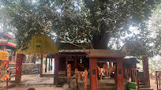
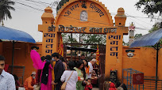
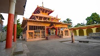

Dharan is a beautiful city located in Eastern Nepal.
It is also known as city of football or mini brazil.It is also famous as Blue City of Nepal.It is famous destination for Hindu religious pilgrims as it hosts famous temple such as Budha Subba Temple, Dantakali Temple, Pindeswori Temple.
loved by many and adored by few, Dharan is definitely a place to visit during your visit in Nepal.



